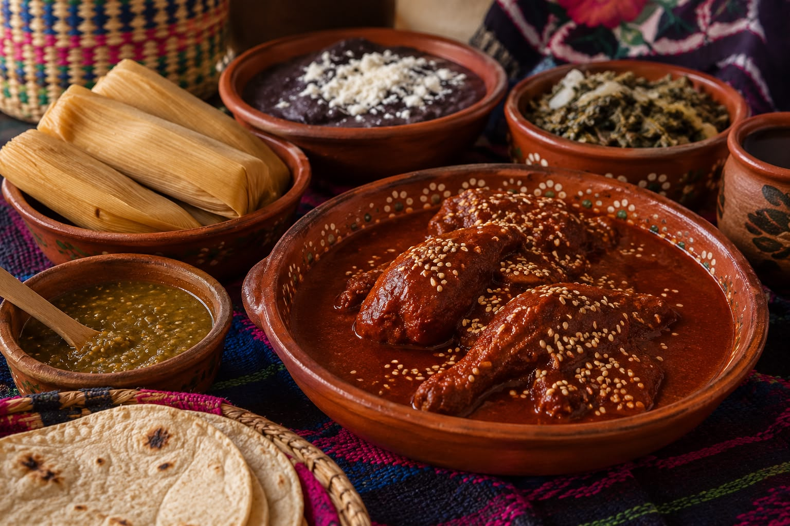
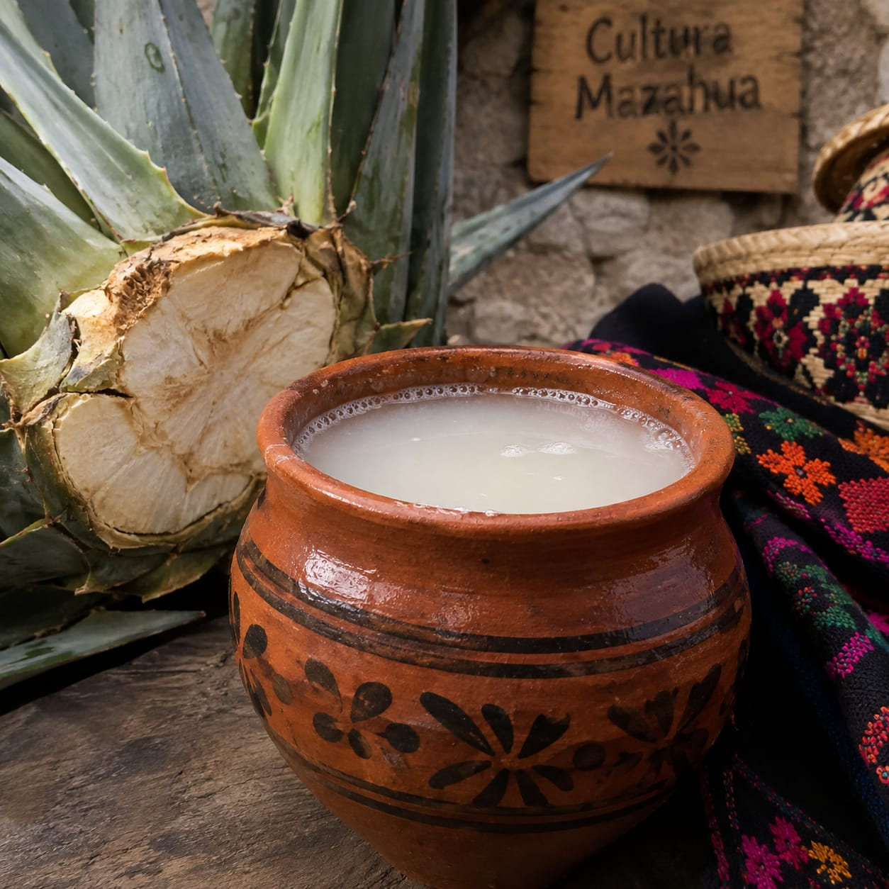
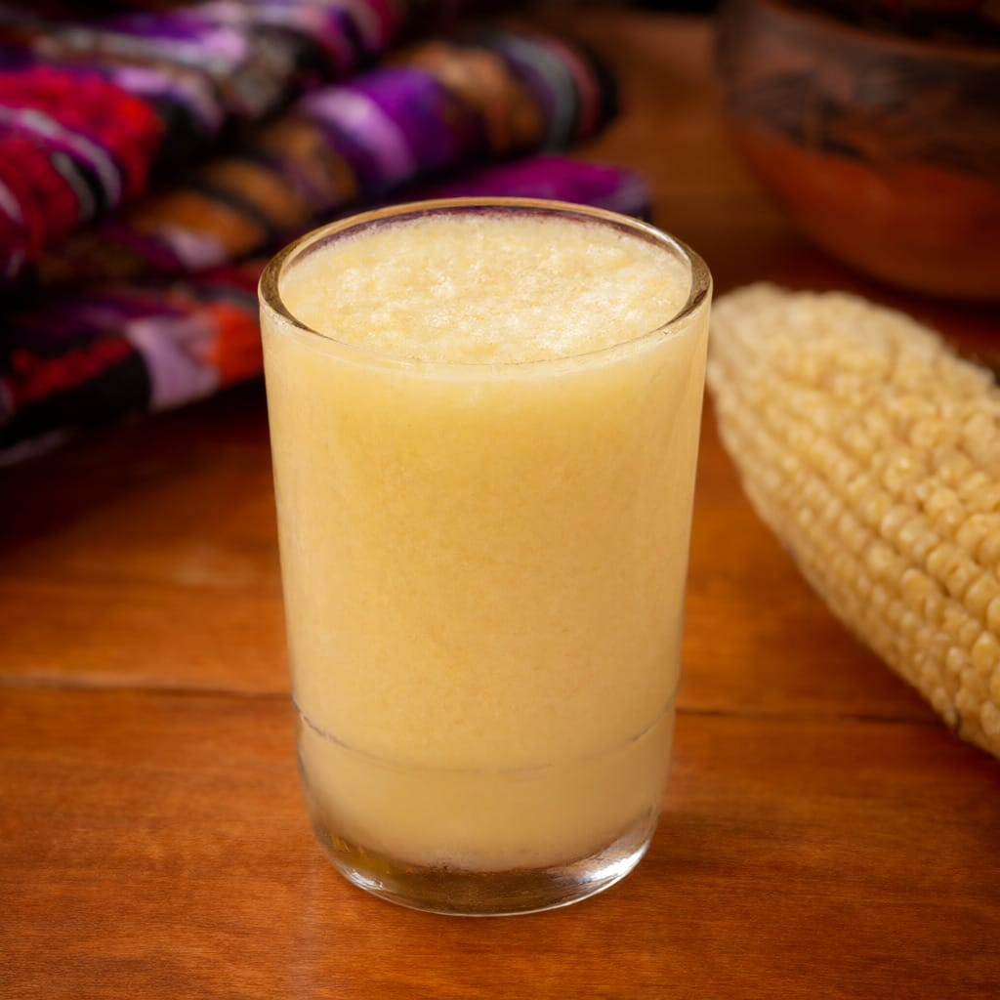
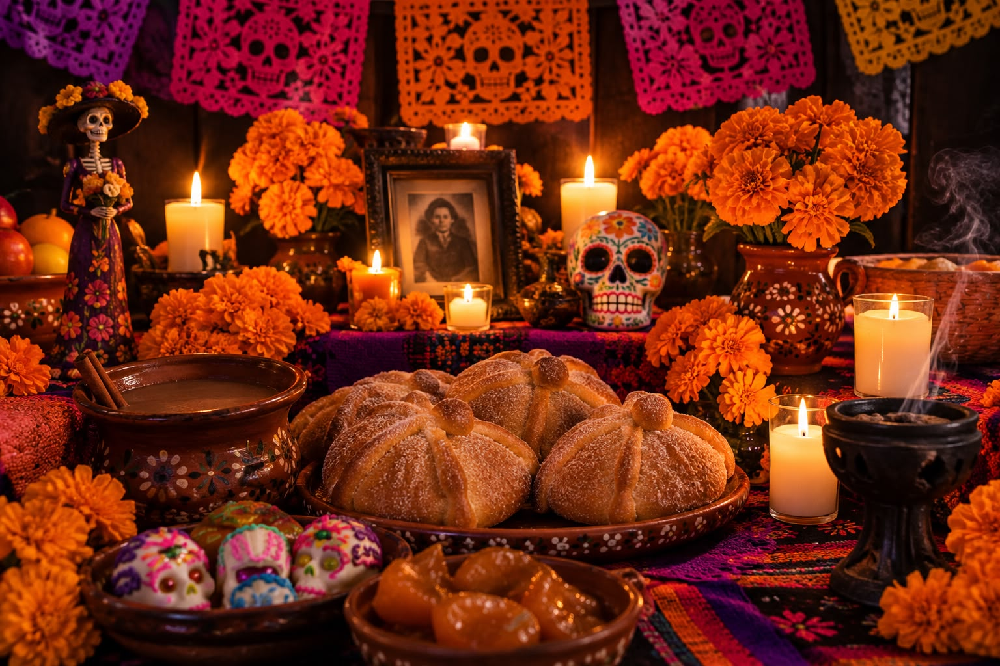
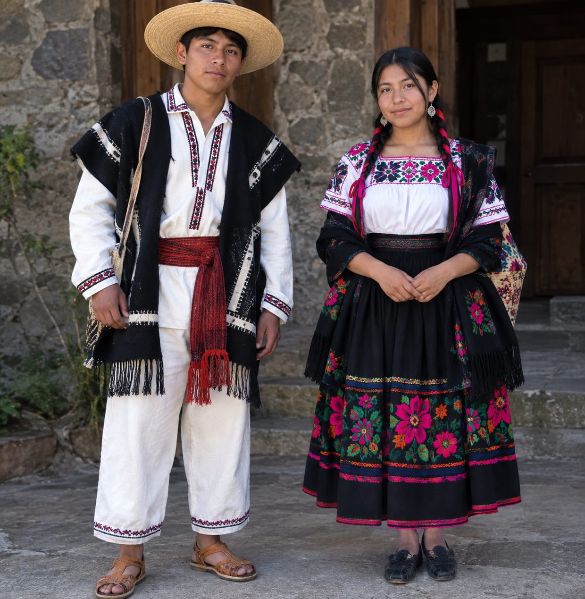
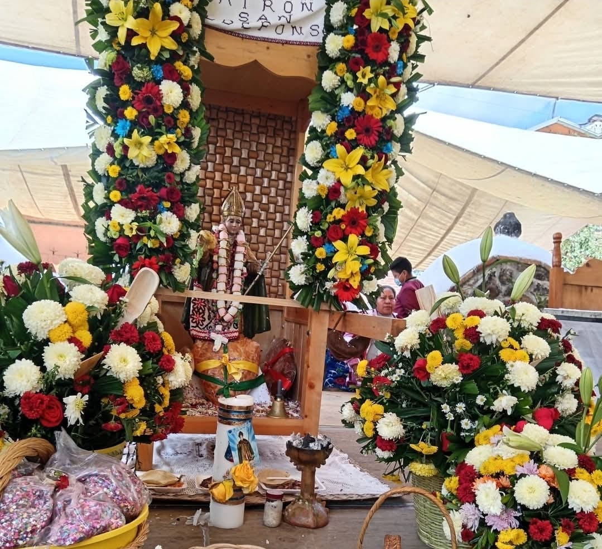
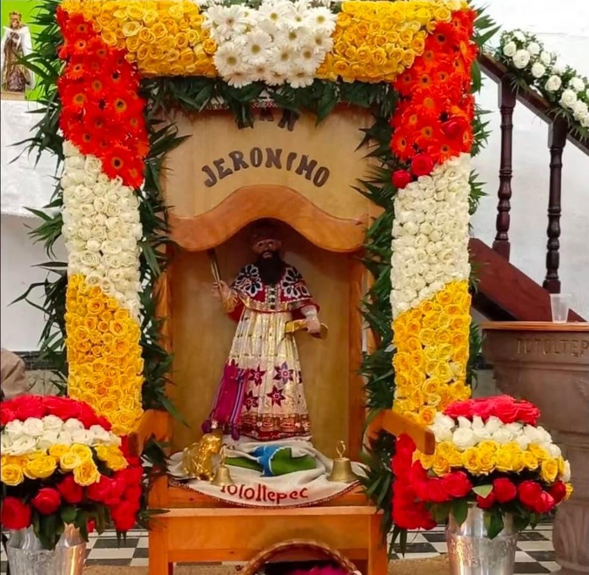
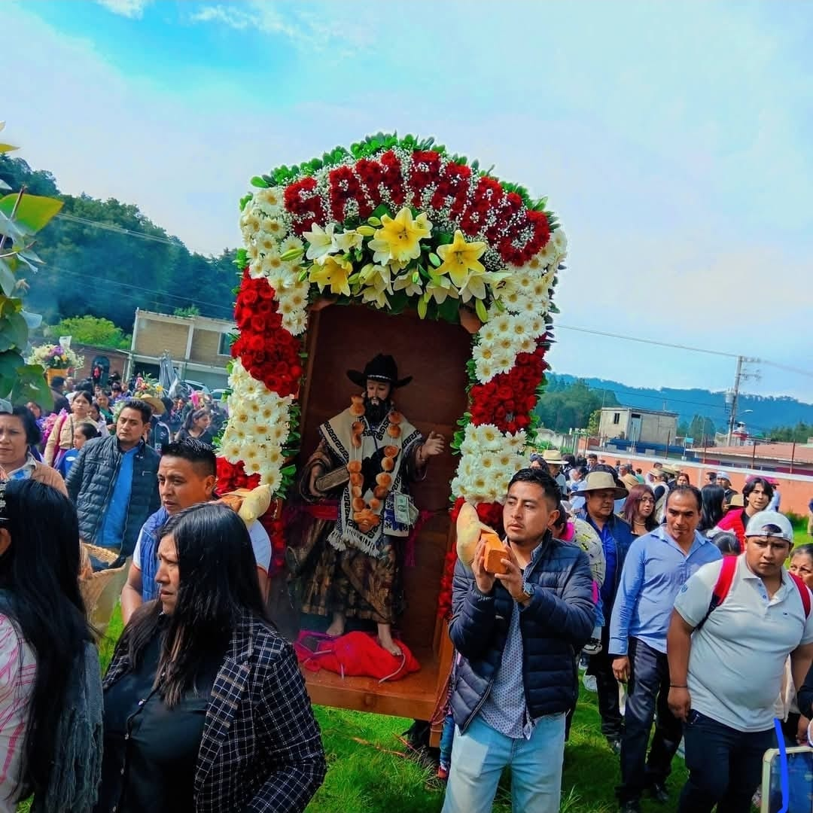
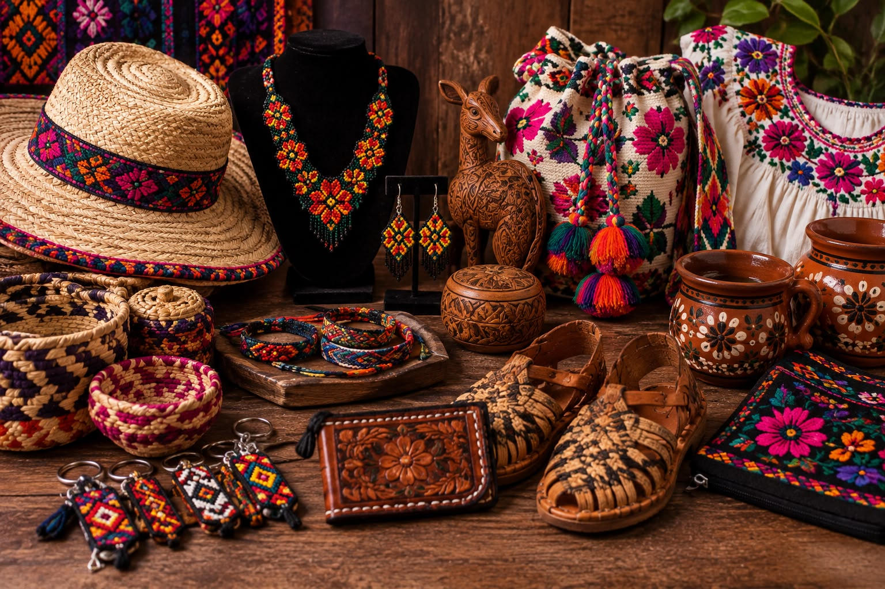
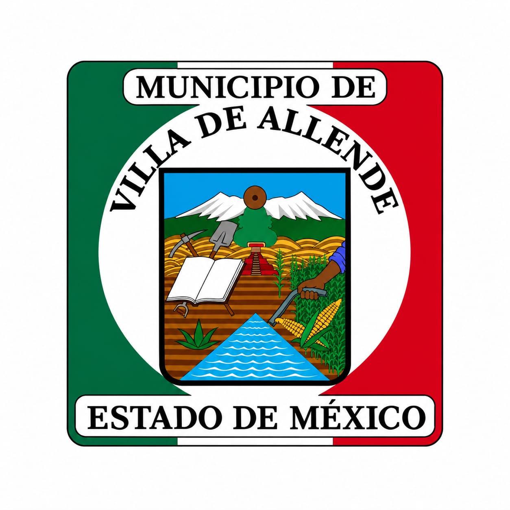

Platillos
Conoce algunos platillos tradicionales de Villa de Allende.
Ver másConoce la cultura, las tradiciones, la gastronomía y los lugares de nuestro municipio.
ExplorarVILLA360 te muestra algunos platillos de la gastronomía de su municipio.
VILLA360 te muestra algunas recetas de la gastronomía de su municipio.
Receta de la cocina local.
Ver recetaConoce más sobre su preparación.
Ver recetaSabores de la comunidad.
Ver recetaBebidas tradicionales del municipio.

El "Pulque" forma parte de las bebidas tipicas de Villa de Allende por su labor de hacer con maguey .

El cende forma parte de Villa de Allende en las bebidas tipicas del municio por su sabor a fermento de maiz.

Conoce las tradiciones y costumbres que forman parte de la identidad de Villa de Allende.

En San Jose Villa de Allende existen varios tipos ropa pero las mas representativas son las mazahuas.
Regresar
La fiesta de San Ildefonso es una de las mas representativas y grandes de Villa de Allende ya que cuenta con una muy amplia variedad de tradicones y de costumbres como lo es la fiesta patronal ya que tambien atrae a muchos turistas.

La fiesta de San Jeronimo es la segunda mas grande en el municipio y es tambien una de las mas importantes en el por sus tradiciones y bailables.

La fiesta de San Pablo es la tercera mas grande de Villa de Allende y cuenta con una de las culturas mas bellas del municipio.

Conoce las expresiones artesanales y el trabajo de las personas de las comunidades.
Volver al inicioConoce algunos de los lugares de interés del municipio.
Conoce algunos sitios de interés del municipio y descubre lo que puedes visitar.

Explora los espacios y paisajes que forman parte de Villa de Allende.
Ver ubicación